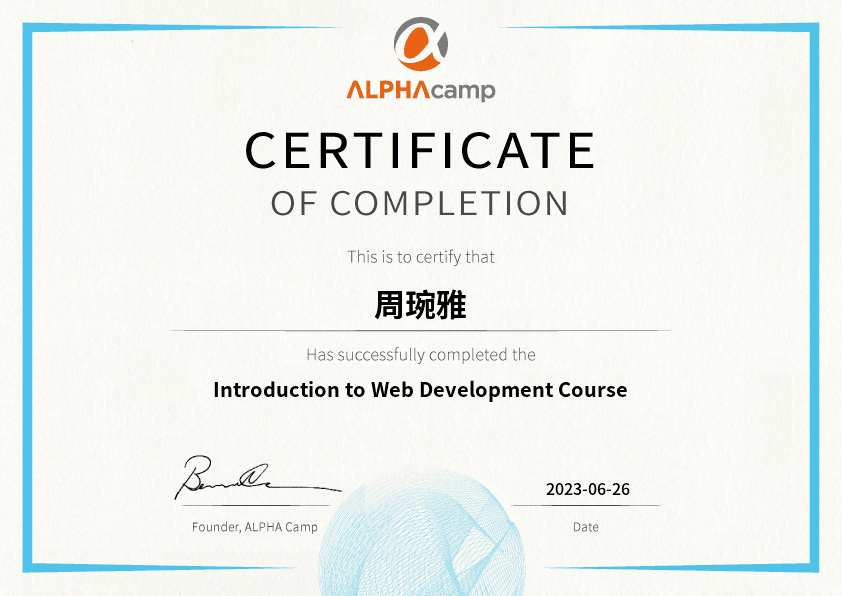
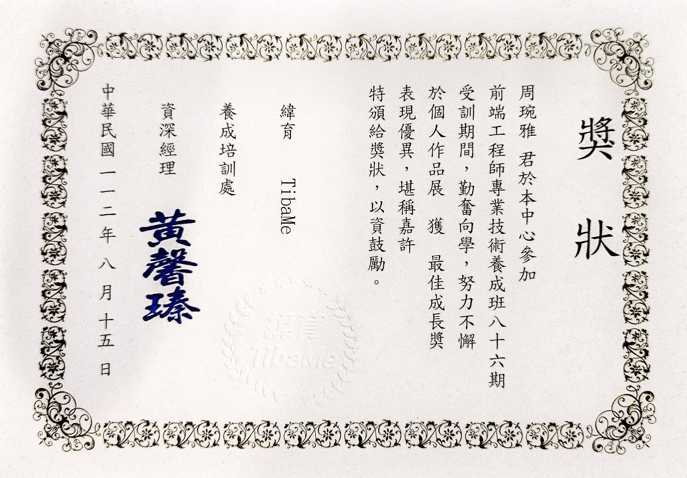

周琬雅 Megara Chou
專業技能
基礎設計與布局
擁有網頁設計基礎，能夠打造出直觀且用戶友善的界面。
- HTML
- CSS
- JavaScript
- 善用Figma製作：
- Flow Chart
- UI flow
- Wireframe
- Mockup
全端網頁開發
具備打造兼具前後端的 Web App 產品。瞭解網路應用程式運作的每個環節，並親手打造自己的產品。
- 切版、RWD
- 操作 DOM 事件
- PHP建構後台
技術應用
透過前端框架，快速開發動態網頁應用。在後端技術方面，基本資料庫設計應用、建置完整的登入系統、實作購物車。
- 設定網域名稱 ( Domain )
- 前端框架 ( Vue )
- SQL 資料庫設計
相關結業證書
線上課程 - ALPHAcamp 網頁開發入門
個專最佳成長獎 - 緯育 TibaMe
作品集 網站連結
團專發表
PlanetVoyager星際體驗－完成前後台架構的星際旅遊體驗宣傳網站。
負責頁面：首頁、星際旅程，後台：CSS、內容管理-首頁輪播、最新消息

自傳
我是琬雅，從有記憶開始，我一直都是喜歡尋求解答的探索者。在會計行業的日子裡，我經常感受到自己被日復一日、重複的工作所束縛，雖然數字與細節曾是我關心的重心，但我的內心一直渴望著更多刺激與創新。數月前，我偶然看了一個網頁設計教程，而被深深被吸引，讓我想成為一名前端工程師。雖然我從未有過任何資訊經驗，更別提寫程式了，但我堅信，以我喜歡找答案的熱情和決心可以克服一切困難。
在資策會的推薦下選擇前往緯育 TibaMe 接受訓練，剛開始的學習路程確實困難重重，每一次遇到新的概念或技術挑戰，都像是在攀爬一面陡峭的山壁，但正因為這些挑戰，我才更加珍惜每一次的成果與突破。製作個專與團專的過程：從需求分析、設計、實現到測試，每天都有新的概念和困難等著我，但這也讓我真正地體驗到了作為一名前端工程師的樂趣。我花了無數的夜晚深入研究，並加入全端工程師社群，與經驗豐富的前端工程師交流，透過他們的經驗，我學到了不僅僅是技術，更多的是解決問題的思維和團隊合作的重要性以及如何在這個領域中持續成長。 當我深入了解前端工程領域後，我逐漸發現，這個行業不只是寫代碼那麼簡單。它更像是一門藝術，要創建一個美觀且用戶友好的界面，需要極大的創意和專業的技術知識。除了技術方面，溝通也是前端工程的一部分，要確保與設計師、後端工程師及其他團隊成員有良好的協作和理解。
這讓我想起之前在會計行業中的經驗，儘管看似不相干，但我在那裡所學到的細心、組織和溝通技巧，在這個新的領域中也起到了不可或缺的作用。比如，當我在設計一個新的功能或解決一個特定問題時，我會使用之前的經驗，以組織有序的方式進行工作，確保每一步都不會遺漏任何細節。同時，與我的組員合作也讓我明白，單靠技術知識是不夠的，更需要團隊合作和溝通。 我已經準備好踏入這個充滿機會的領域，我的職涯目標是轉型為一名專業的全端工程師，我知道挑戰也會越來越多，為了實現這一目標，除了 TibaMe 的課程外，我還投資自己，報名了 ALPHA Camp 的前端框架 ( React ) 與後端線上課程，以確保技能的全面性。
回想過去四個月的學習和轉變，這次的轉職不僅僅是職業的轉變，更是我人生的一個重要轉折，從一個對資訊一竅不通的外行，到我的努力和進步得到了認可，榮獲了成長獎，每一次的成就都讓我更加確定，我已經找到了真正熱愛的事業。從曾經的會計記帳和文書工作，到如今能夠獨立開發和創造，每一步的轉變都讓我深感滿足和興奮。對我而言，程式設計不僅是技能，更是一種全新的創作方式，我期待未來能夠在這一領域中，持續學習、進步。
英文自傳
I am Wanya. Ever since I can remember, I've always been an explorer who seeks answers. During my days in the accounting industry, I often felt constrained by the monotonous and repetitive nature of the work. While numbers and details were once my main focus, my heart yearned for more excitement and innovation. A few months ago, I stumbled upon a web design tutorial and was deeply captivated, igniting my desire to become a front-end engineer. Although I had no prior experience in IT, let alone coding, I believe that with my passion for finding answers and my determination, I can overcome any challenge.
Upon the recommendation of the Information Technology Training & Development Center, I chose to train at TibaMe. The initial learning journey was indeed rife with challenges. Every time I encountered a new concept or technical challenge, it felt like scaling a steep cliff, but it was these challenges that made me cherish every breakthrough even more. The process of creating personal and group projects – from requirements analysis, design, implementation to testing – brought new concepts and challenges every day. This journey allowed me to genuinely experience the joy of being a front-end engineer. I've spent countless nights diving deep into research and joined communities of full-stack engineers, interacting with experienced front-end engineers. Through their experiences, I learned not just about technology but also problem-solving, the importance of teamwork, and how to continually grow in this field. As I delved deeper into the world of front-end engineering, I realized that this profession is not just about coding; it's more like an art. Creating a visually appealing and user-friendly interface requires immense creativity and technical expertise. Moreover, communication is an integral part of front-end engineering, ensuring seamless collaboration and understanding with designers, back-end engineers, and other team members.
This reminded me of my past experiences in the accounting industry. Although seemingly unrelated, the attention to detail, organizational skills, and communication abilities I acquired there have become indispensable in this new field. For instance, when designing a new feature or solving a specific issue, I draw upon my past experiences to work in an organized manner, ensuring that every step is meticulously executed. Collaborating with my team members has also shown me that just technical knowledge isn't enough; teamwork and communication are equally crucial. I am ready to step into this realm of opportunities. My career goal is to transition into a professional full-stack engineer. I know the challenges will only multiply, and to achieve this goal, aside from my TibaMe courses, I have also invested in myself by enrolling in ALPHA Camp's front-end framework (React) and back-end online courses to ensure a holistic skill set.
Reflecting on my learning and transition over the past four months, this career change is not just a professional transformation but also a significant turning point in my life. From being a complete outsider to IT to earning recognition for my hard work and progress, even receiving a growth award, every milestone has solidified my belief that I've found my true calling. From my previous roles in accounting and clerical tasks to now being able to develop and create independently, every step of this transition has been incredibly fulfilling and exhilarating. To me, programming is not just a skill but a whole new way of creating. I look forward to continuously learning and growing in this domain.
工作經歷
財會人員 - AR
我主要負責管理和處理帳款收入（AR）相關的事務。雖然出於個人職涯的規劃，我在此職位上的時間並不長，但我始終秉持著對工作的熱情和責任感，確保我所負責的每一項工作都能達到最佳。在短短的半年時間內，我不僅協助主管編制了全新的報表，還主動擬定了一套詳盡的帳款收入相關系統的標準操作程序（SOP），這包括了系統操作、報表編制、郵件回覆等多個環節的指引和流程。我認為，有了這樣的SOP，即使我不在部門中，其他同事也能夠根據這份文件，快速且正確的完成相關工作。
記長組-記帳、工商、境外公司
我有幸在八中事務所的記帳組部門服務了近五年的時間，這段期間，我主要負責了境外公司工商相關的各項事務，以及各行各業的記帳事宜。
雖然我的主要工作職掌是記帳，但由於會計事務所本身的人才流動率相當高，這意味著有許多客戶的帳目都留有前位記帳員遺留下來的問題。這些問題有時涉及複雜的帳務調整和誤差修正，每當遇到這種情況，我都會主動承擔起責任，與會計師進行深入的溝通和討論，為客戶提供最佳的解決方案。這不僅鍛煉了我的問題解決能力，也讓我深深體會到了與專業人士合作的重要性。
除此之外，事務所所持有的境外公司工商資料歷史久遠，經過多年的累積，這些文件和資料往往缺乏系統性的整理和管理。在我任期內，我主動提議對這些資料進行重新歸檔和整理，並負責了這一大型項目的推進。經過無數的工作時數，我成功地將這些零散、混亂的資料重新整合和歸檔，使其更加便於查找和使用。 回顧這段工作經驗，我不僅學到了會計和工商的專業知識，更重要的是，我學會了如何面對和解決實際工作中的各種挑戰。這段經驗對我後續的職業生涯起到了很大的影響。